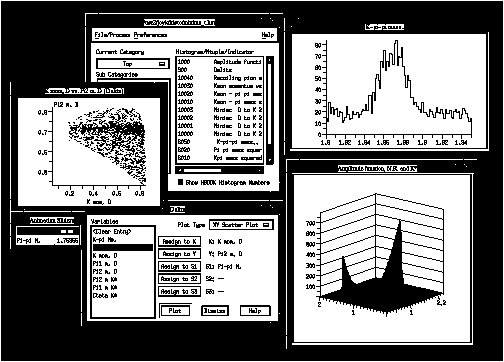

Histo-Scope V4.0 User's Guide 
Physics Analysis Tools Group
Histo-Scope
Software Version: V4.0
Date:
Host System Support: DEC/ULTRIX
DEC/OSF-1
SGI/IRIX
Sun/Solaris
IBM/AIX
Graphics Support: X-based workstation or X-Terminal
Prerequisite Software
for VAX/VMS: TGV MultiNet
Optional Software: HBOOK Version 4.22 (or later)
This software was produced by the Nirvana project of the Physics Analysis Tools
Group. The Nirvana project goal is to provide visualization tools for Fermilab
physicists that make effective use of computer workstations and Graphical User
Interfaces. Histo-Scope is a pilot product for a suite of easy to use, Motif
based tools for physics analysis.
Histo-Scope was written by: Mark Edel, project leader
Konstantine Iourha
Joy Kyriakopulos
Jeff Kallenbach
Paul Lebrun
Baolin Ren
User's Guide Written by Joy Kyriakopulos and Donna Reid
Copyright Status: Fermi National Accelerator Laboratory (FNAL) documents are
sponsored by the U.S. Department of Energy under Contract No.
DE-AC02-76CH03000. Therefore, the U.S. Government retains a
non-exclusive, royalty-free license to publish or reproduce
these documents or software for U.S. Government purposes.
All documents and software for this product are protected
under the U.S. and Foreign Copyright Laws, and FNAL reserves
all rights.
Introduction 8 New Features for Histo-Scope V4.0 9 Part I - Using the Histo-Scope Program Getting Started with Histo-Scope 11 User Interface Overview for Beginning Motif Users 13 Using Histo-Scope's Main Window 20 Create Multiple Plot Window 27 Connect to Process Window 29 Verifying Proper Setup of Permissions 30 One-Dimensional Histograms 32 Two-Dimensional Histograms 35 Indicators, Controls, and Triggers 37 Indicator Window 37 Control Window 38 Trigger Window 39 Ntuple Window 40 Time Series Plots 43 XY Line Plot 45 XY Scatter Plot 48 XYZ Scatter Plot 50 Adaptive Histogram 52 Adaptive Two-Dimensional Histogram 54 Two-Dimensional Cell Plot 57 Overlay Plots 59 Adjusting Plot Settings 59 Getting Help 59 Getting Statistics on the Data 59 Setting Styles for Markers and Lines and Histograms 60 Showing/Hiding the Variables Legend 62 Sliders: Observing the Effect of Other Ntuple Variableson the Plot 62
Rebinning Ntuple Data Displayed as a Histogram 63 Labelling of Histogram Bin Edges 64 Altering Cell Size for Data Displayed as a Cell Plot 64 Other Views 65 Scaling and Panning the Plots 66 Showing/Hiding Backplanes for 2D Histograms 66 Showing/Hiding Errors for Histograms 67 Thickening/Lightening Scatter Plot Points 67 Update Options for all Plots 67 Printing a Plot 68 Generating a PostScript File of a Plot 69 Showing/Hiding the Range for Indicators and Controls 70 Deleting a MiniPlot 70 Changing the Window Title 70 Removing an Overlayed Plot 70 Closing a Plot 70 Part II -HSDIR Directory Tool 71
tohbook Tool 71
Part III -Histo-Scope Library Subroutines 72
Histo-Scope Data Routines 73 Building and Running the Example Programs on Unix 78 Example Programs FORTRAN 80 C 90 FORTRAN Binding Routines Routines for all Users 93 Routines for HBOOK 95 Histo-Scope data routines 95 Item Creation Routines 96 Filling Histograms/Ntuples and Setting Errors 100 Setting Indicators, Reading Controlsand Checking Triggers 102
Functions for looking up items 103 Functions for getting properties of all items 104 Functions for reading/writing items from/to files 105 Functions for managing data items 106 Functions for Accessing Histogram Data 108 Calculations on histogram data 112 Summing Groups of Histograms and Ntuples 116 Functions for accessing Ntuple data 117 C Binding Routines Routines for all Users 120 Routines for HBOOK 122 Histo-Scope data routines 122 Filling Histograms/Ntuples and Setting Errors 127 Setting Indicators, Reading Controls,and Checking Triggers 129
Functions for looking up items: 130 Functions for getting properties of all items 131 Functions for reading/writing items from/to files 132 Functions for managing data items 133 Functions for accessing histogram data 135 Calculations on histogram data 139 Summing Groups of Histograms and Ntuples 143 Functions for accessing Ntuple data 145 Hints for Programmers 148 Release Notes Requirements New UID parameter in all the Histo-Scope Item Creation Routines HBOOK Circular Ntuple Support UNIX restriction on putting Histo-Scope process in background Some X-Servers do not destroy child dialog windows Printer Options window Floating Point Errors Setting up Histo-Scope on UNIX without Fermilab's ups/upd Index 152